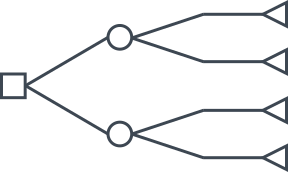

Introduction to Probability Models
Lecture 7
Qi Wang, Department of Statistics
Sep 5, 2018
Bayes Rule
Bayes Rule
If \(B_1, B_2, \cdots, B_n\) forms a partition of $\Omega$, for any event A: \begin{align} P(B_i|A) = & \frac{P(B_i\cap A)}{P(A)} \\ = & \frac{P(B_i\cap A)}{\sum_{i = 1}^n P(A|B_i) \times P(B_i)} \end{align}
Law of Total Probability

Tree Diagrams
To Better represent the structure of the probability, tree diagrams can be pretty useful
Example 1
After the first exam, a student will go to the beach
(event B) depending on whether they pass the exam (event A).
The probability a student will pass is 0.9. If a student passes,
they go to the beach with a probability of 0.8. However,
a student who fails the exam will only go to the beach with
a probability of 0.4.
- What is the probability that a student went to the beach?
- What is the probability that a student at the beach passed the test?
- What is the probability that a student not at the beach failed the test?
- Is going to the beach independent of whether the student passed the exam?
Example 2
Let us assume that a specific disease is only present in 5 out of every 1,000 people. Suppose that the test for the disease is accurate 99% of the time a person has the disease and 95% of the time that a person lacks the disease. Find the probability that a random person will test positive for this disease.